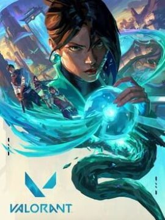
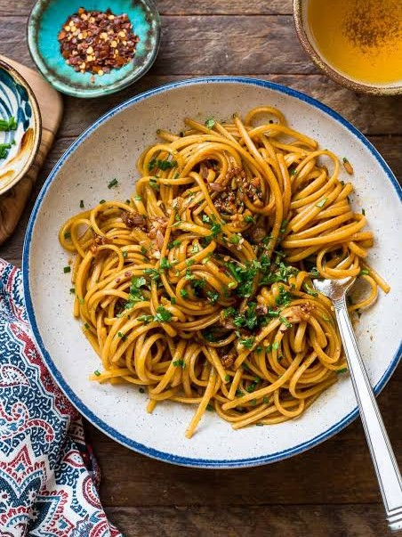
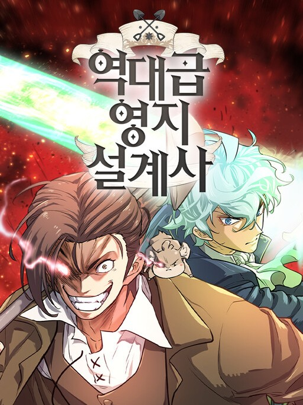
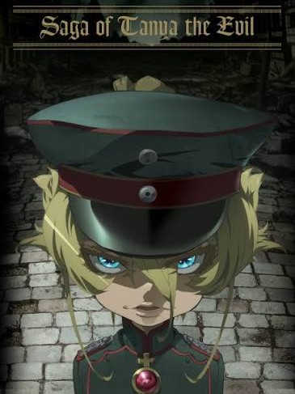
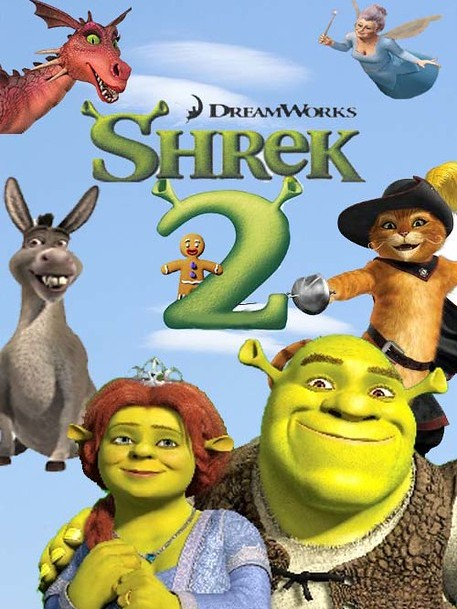

VALORANT
My favorite video game: Played since release, sent way too much money on a free game and virtual guns. 5v5 FPS games search and destroy gameplay style with abilities as a twist.

Noodles
My favorite food: Anything with noodles I really enjoy, chicken noodle soup is a banger, but Udon is really good too, doesn't necessarily need soup either.

The Greatest Estate Developer
My favorite manhwa: Super funny, another transported to another world plot but he uses his knowledge as an estate developer from the modern world to develop a fantasy medievel type world. The plot is hilarious, the main character is an ugly guy but rather charming.

Saga of Tanya The Evil
My favorite Anime: An atheistic, cutthroat Japanese salaryman is murdered and reincarnated by an angry god ("Being X") as Tanya Degurechaff, a magically gifted orphan girl in an alternate-universe WWI. Procedes to commit genocide.

Shrek 2
This is my favorite movie: Arguably the best sequel in animation history.
MY girlfriend
This is my favorite person: My best friend and the best person I know.